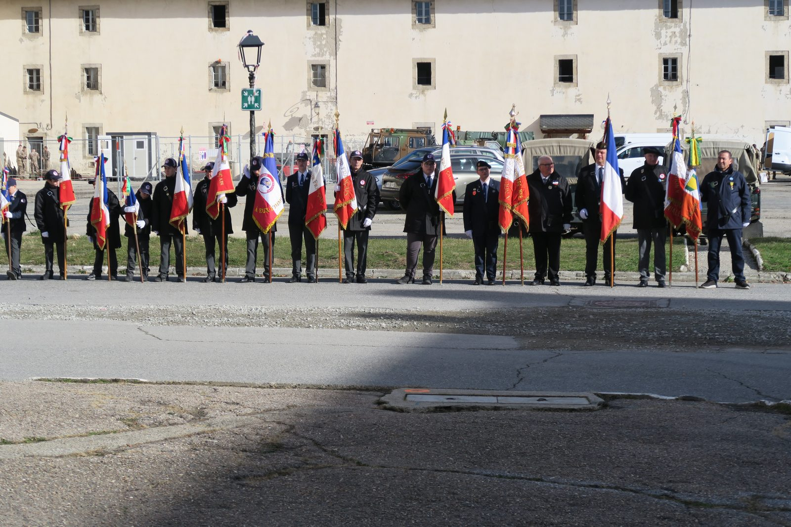
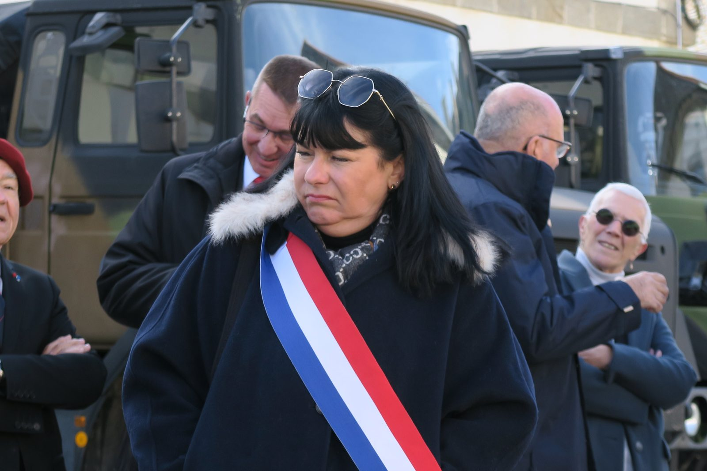
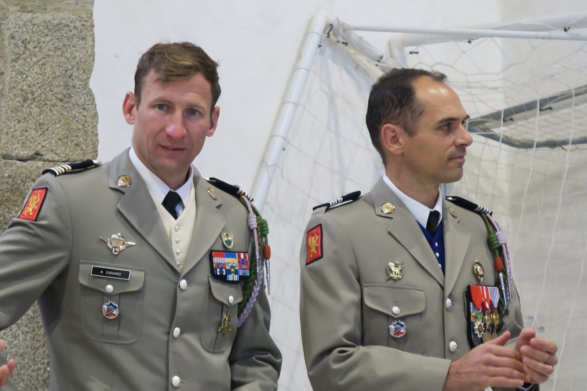
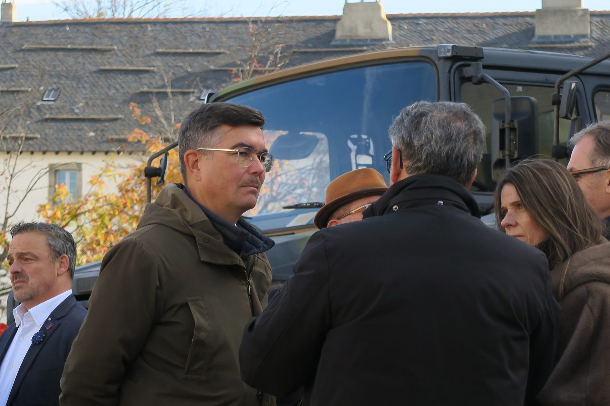

Les 70 ans de l'opération Mousquetaire
Une cérémonie présidée par le Souvenir Français, dans la citadelle, pour le soixante-dixième anniversaire de l'intervention franco-britannique sur le canal de Suez.

Novembre 1956 : Suez
Le 26 juillet 1956, le colonel Nasser nationalise le canal de Suez et met sous séquestre les biens de la Compagnie universelle. Paris et Londres décident d'intervenir. La conférence d'Épiskopi, le 30 octobre, fixe l'opération au 6 novembre, précédée la veille par l'assaut des parachutistes ; l'offensive aérienne commence dès le 31 octobre.
Au petit matin du 5 novembre, 487 parachutistes du 2e régiment de parachutistes coloniaux, sous les ordres du colonel Château-Jobert, sautent sur le canal et s'emparent intacte de l'usine des eaux. Vers quinze heures, 506 autres les rejoignent, commandés par le lieutenant-colonel Fossey-François. Les Français tiennent Port-Fouad, en face de Port-Saïd. Le largage au sud de Port-Saïd est appuyé par des commandos de la 11e demi-brigade parachutiste de choc.
Le 6 novembre au matin, les forces de débarquement ouvrent le feu : l'assaut amphibie, à l'est de Port-Fouad, s'articule autour du 1er régiment étranger de parachutistes, de trois commandos marine et de deux sections du 60e génie, appuyés par les chars. L'objectif est atteint.
Le 7 novembre, un cessez-le-feu tombe, arraché par la pression américaine aux Nations unies. Les Casques bleus prennent la relève à partir du 21 novembre ; l'évacuation française s'achève le 22 décembre. Militairement gagnée, l'opération est politiquement perdue.
Pourquoi à Mont-Louis
Parce que la citadelle était leur maison. Le 11e Choc y était stationné depuis le 1er septembre 1946 ; à partir de 1957, l'unité est répartie entre Calvi, Corte, Collioure et Mont-Louis — les emprises mêmes où s'entraînent aujourd'hui les stagiaires du centre. Dissoute le 31 décembre 1963, elle remet son étendard au centre national d'entraînement commando de Mont-Louis.
Commémorer Suez ici, soixante-dix ans après, ce n'est donc pas honorer une opération lointaine : c'est honorer des hommes partis d'ici.
Une cérémonie sobre
Le samedi 7 novembre 2026, le Souvenir Français a présidé cette commémoration dans la citadelle. Une cérémonie simple, sobre et de bon goût, suivie par une assistance nombreuse où l'on comptait beaucoup d'élus, ainsi que Madame la députée Dogor-Such.
Le général (2S) Lasvenes, président du Souvenir Français, a remercié l'amicale de sa présence, assurée par le représentant que notre président avait désigné pour l'occasion.
La prestation de la maison mère fut impeccable. Le chef de corps et l'officier supérieur adjoint, récemment arrivés, commencent à prendre leurs marques.
En pointe toujours



Présentation au drapeau
Le vendredi 6 novembre, le contingent du service national volontaire était présenté au drapeau, au même endroit.
Lire le compte renduVous y étiez ?
Si vous détenez d'autres photographies de cette cérémonie, confiez-les à la commission mémoire.
Nous écrirePhotographies de Georges Huet. Les éléments historiques sont tirés de la revue Soldats de France et des ressources du ministère des Armées.